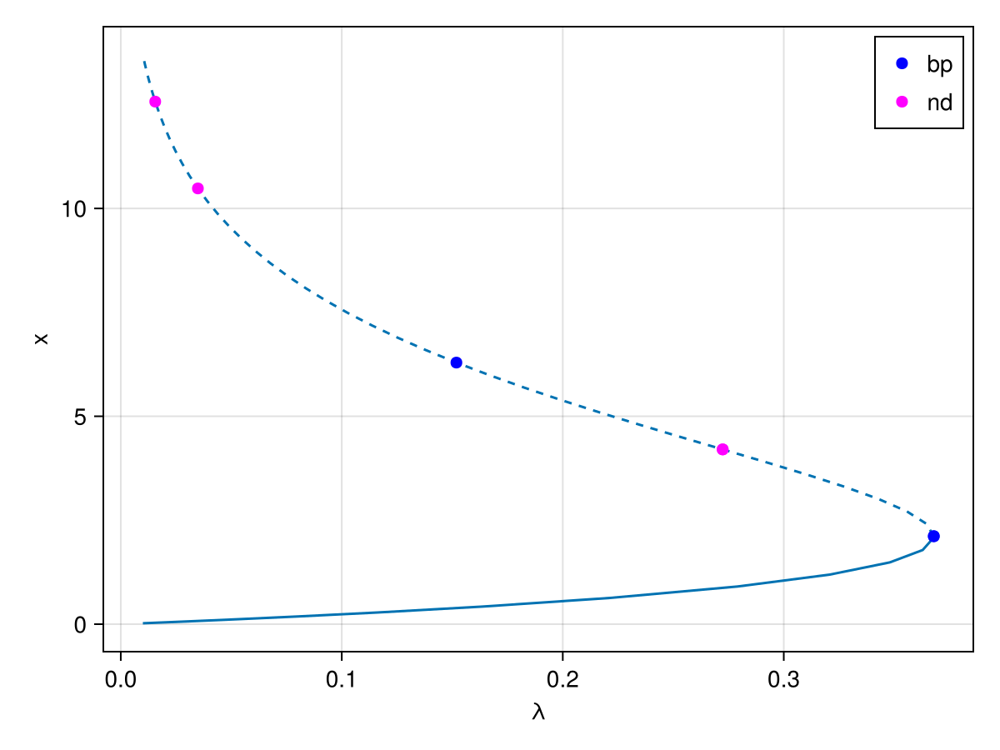
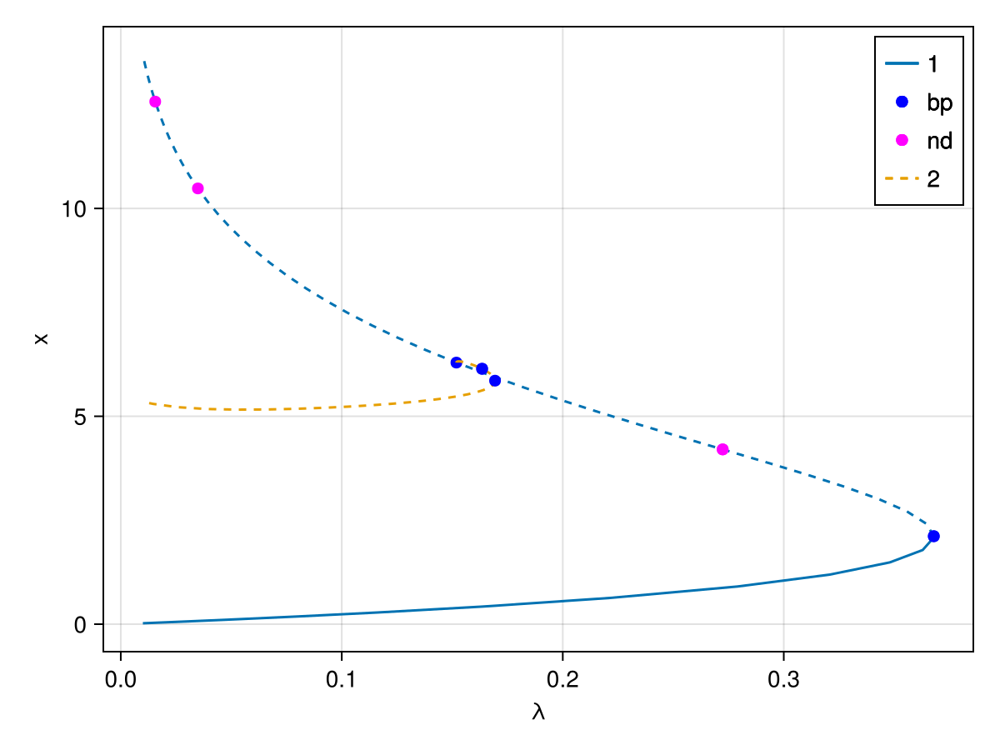
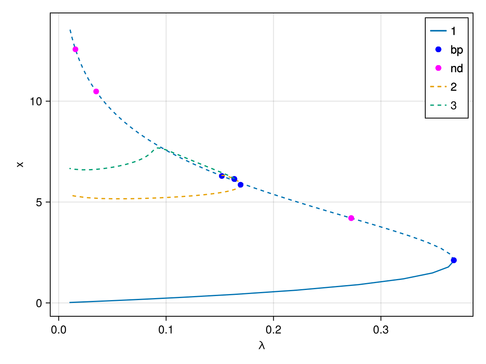
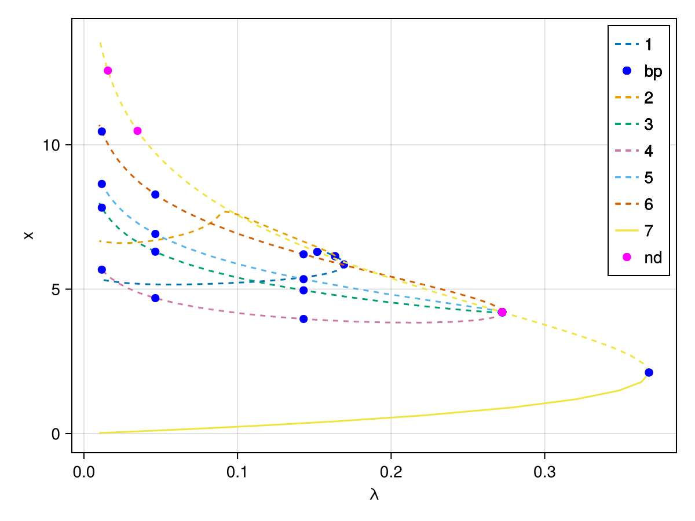

🟢 2d Bratu model
We consider the problem of Mittelmann [Farrell] [Wouters]:
\[\Delta u + NL(\lambda,u) = 0\]
with Neumann boundary condition on $\Omega = (0,1)^2$ and where $NL(\lambda,u)\equiv-10(u-\lambda e^u)$. This is a good example to show how automatic branch switching works and also nonlinear deflation.
using CairoMakieusing Gridapusing Gridap.FESpacesusing GridapBifurcationKitusing BifurcationKitconst BK = BifurcationKitBK.set_plot_backend!(BK.BK_Makie())# custom plot function to deal with Gridapfunction plotgridap!(ax, x; k...) n = isqrt(length(x)) heatmap!(ax, reshape(x, n, n); colormap = :viridis, k...)endplotgridap(x; k...) = (fig = Figure(); ax = Axis(fig[1,1]); plotgridap!(ax, x; k...); fig)plotgridap (generic function with 1 method)We are now ready to specify the problem using the setting of Gridap.jl: it allows to write the equations very closely to the mathematical formulation:
# discretisationn = 40domain = (0, 1, 0, 1)cells = (n, n)model = CartesianDiscreteModel(domain,cells)# function spacesorder = 1reffe = ReferenceFE(lagrangian, Float64, order)V = TestFESpace(model, reffe, conformity=:H1,)#dirichlet_tags="boundary")U = TrialFESpace(V)Ω = Triangulation(model)degree = 2*orderconst dΩ = Measure(Ω, degree) # we make it const because it is used in res# nonlinearityNL(u) = exp(u)# residualres(u,p,v) = ∫( -∇(v)⋅∇(u) - v ⋅ (u - p.λ ⋅ (NL ∘ u)) * 10 )*dΩ# jacobian of the residualjac(u,p,du,v) = ∫( -∇(v)⋅∇(du) - v ⋅ du ⋅ (1 - p.λ * ( NL ∘ u)) * 10 )*dΩ# 3rd and 4th derivatives, used for aBSd2res(u,p,du1,du2,v) = ∫( v ⋅ du1 ⋅ du2 ⋅ (NL ∘ u) * 10 * p.λ )*dΩd3res(u,p,du1,du2,du3,v) = ∫( v ⋅ du1 ⋅ du2 ⋅ du3 ⋅ (NL ∘ u) * 10 * p.λ )*dΩ# example of initial guessuh = zero(U)# model parameterpar_bratu = (λ = 0.01,)# weight for normbratuconst w = cumsum(ones(length(uh.free_values))) / length(uh.free_values)w .= (1 .+ LinRange(-1,1,n+1)) * transpose(LinRange(-1,1,n+1)) |> vecw .-= minimum(w)normbratu(x) = norm(x .* w) / sqrt(length(x))# problem definitionprob = GridapBifProblem(res, uh, par_bratu, V, U, dΩ, (@optic _.λ); jac = jac, # d2res = d2res, # d3res = d3res, plot_solution = (ax, x, p; ax1 = nothing, k...) -> plotgridap!(ax, x; k...), record_from_solution = (x, p;k...) -> normbratu(x))┌─ Bifurcation problem with uType typeof(Main.jac)
├─ Inplace: false
├─ Dimension: 1681
├─ Symmetric: false
└─ Parameter: λIn the same vein, we can continue this solution as function of $\lambda$:
optn = NewtonPar(eigsolver = EigArpack())optc = ContinuationPar(p_max = 40., p_min = 0.01, ds = 0.01, max_steps = 1000, detect_bifurcation = 3, newton_options = optn, nev = 20, tol_stability = 1e-6, n_inversion = 6)br = continuation(prob, PALC(tangent = Bordered()), optc; # plot = true, verbosity = 0, ) ┌─ Curve type: EquilibriumCont
├─ Number of points: 56
├─ Type of vectors: Vector{Float64}
├─ Parameter λ starts at 0.01, ends at 0.01
├─ Algo: PALC [Bordered]
└─ Special points:
- # 1, bp at λ ≈ +0.36787944 ∈ (+0.36787944, +0.36787944), |δp|=5e-11, [converged], δ = ( 1, 0), step = 13
- # 2, nd at λ ≈ +0.27236642 ∈ (+0.27236642, +0.27236657), |δp|=1e-07, [converged], δ = ( 2, 0), step = 21
- # 3, bp at λ ≈ +0.15187190 ∈ (+0.15187190, +0.15187276), |δp|=9e-07, [converged], δ = ( 1, 0), step = 29
- # 4, nd at λ ≈ +0.03489604 ∈ (+0.03489604, +0.03489652), |δp|=5e-07, [converged], δ = ( 2, 0), step = 44
- # 5, nd at λ ≈ +0.01558958 ∈ (+0.01558958, +0.01558969), |δp|=1e-07, [converged], δ = ( 2, 0), step = 51
- # 6, endpoint at λ ≈ +0.01000000, step = 55
f,ax = BK.plot(br; dash_unstable_style = true)f
Automatic branch switching at simple branch points
We can compute the branch off the third bifurcation point:
br1 = continuation(br, 3, ContinuationPar(BK.getcontparams(br); ds = 0.005, dsmax = 0.05, max_steps = 140); # verbosity = 0, plot = true, nev = 10, start_with_eigen = Val(false), scaleζ = norminf, callback_newton = BK.cbMaxNorm(10), ) ┌─ Curve type: EquilibriumCont from Pitchfork bifurcation point.
├─ Number of points: 39
├─ Type of vectors: Vector{Float64}
├─ Parameter λ starts at 0.1518718984837228, ends at 0.01
├─ Algo: PALC [Bordered]
└─ Special points:
- # 1, bp at λ ≈ +0.16349733 ∈ (+0.16349629, +0.16349733), |δp|=1e-06, [converged], δ = (-1, 0), step = 11
- # 2, bp at λ ≈ +0.16934640 ∈ (+0.16934640, +0.16934640), |δp|=1e-11, [converged], δ = (-1, 0), step = 16
- # 3, endpoint at λ ≈ +0.01000000, step = 38
You can also plot the two branches together:
f, ax = BK.plot(br,br1,plotfold=false; dash_unstable_style = true)f
We continue our journey and compute the branch bifurcating of the first bifurcation point from the last branch we computed:
br2 = continuation(br1, 1, ContinuationPar(BK.getcontparams(br1);ds = 0.005, dsmax = 0.05, max_steps = 140); # verbosity = 0, plot = true, nev = 10, start_with_eigen = Val(false), scaleζ = norminf, callback_newton = BK.cbMaxNorm(10), )f, ax = BK.plot(br, br1, br2; dash_unstable_style = true)f
Automatic branch switching at the 2d-branch points
We now show how to perform automatic branch switching at the nonsimple branch points. However, we think it is important that the user is able to use the previous tools in case automatic branch switching fails. This is explained in the next sections.
The call for automatic branch switching is the same as in the case of simple branch points (see above) except that many branches are returned.
branches = continuation(br, 2, # verbosity = 0, plot = true, start_with_eigen = Val(false), usedeflation = true, verbosedeflation = false, callback_newton = BK.cbMaxNorm(10), )4-element Vector{Branch{BifurcationKit.EquilibriumCont, GridapBifProblem{GridapBifurcationKit.GridapProblem{typeof(Main.res), typeof(Main.jac), Nothing, Nothing, Gridap.FESpaces.UnconstrainedFESpace{Vector{Float64}, Gridap.FESpaces.NodeToDofGlue{Int32}}, Gridap.FESpaces.UnconstrainedFESpace{Vector{Float64}, Gridap.FESpaces.NodeToDofGlue{Int32}}, Nothing, Gridap.CellData.GenericMeasure, Nothing, GridapBifurcationKit.MassDefaut}, Vector{Float64}, @NamedTuple{λ::Float64}, PropertyLens{:λ}, Main.var"#3#7", Main.var"#5#8", Float64, BifurcationKit.Jet{Float64, Nothing, BifurcationKit.FiniteDifferences, BifurcationKit.FiniteDifferences, Nothing, Nothing, BifurcationKit.FiniteDifferences, Nothing, Nothing, Nothing, Nothing, Nothing, Nothing, Nothing, Nothing, Nothing, Nothing, Nothing, Nothing, Nothing, Nothing, Nothing, Nothing, Nothing, Nothing, Nothing, Nothing, Nothing, Nothing, Nothing}}, ContResult{BifurcationKit.EquilibriumCont, @NamedTuple{x::Float64, param::Float64, itnewton::Int64, itlinear::Int64, ds::Float64, n_unstable::Int64, n_imag::Int64, stable::Bool, step::Int64}, Vector{Float64}, Matrix{Float64}, SpecialPoint{Float64, @NamedTuple{x::Float64}, Vector{Float64}, Vector{Float64}}, Vector{@NamedTuple{x::Vector{Float64}, p::Float64, step::Int64}}, ContinuationPar{Float64, DefaultLS, BifurcationKit.EigenDAE{EigArpack{Nothing, typeof(real), Base.Pairs{Symbol, Union{}, Tuple{}, @NamedTuple{}}}}}, GridapBifProblem{GridapBifurcationKit.GridapProblem{typeof(Main.res), typeof(Main.jac), Nothing, Nothing, Gridap.FESpaces.UnconstrainedFESpace{Vector{Float64}, Gridap.FESpaces.NodeToDofGlue{Int32}}, Gridap.FESpaces.UnconstrainedFESpace{Vector{Float64}, Gridap.FESpaces.NodeToDofGlue{Int32}}, Nothing, Gridap.CellData.GenericMeasure, Nothing, GridapBifurcationKit.MassDefaut}, Vector{Float64}, @NamedTuple{λ::Float64}, PropertyLens{:λ}, Main.var"#3#7", Main.var"#5#8", Float64, BifurcationKit.Jet{Float64, Nothing, BifurcationKit.FiniteDifferences, BifurcationKit.FiniteDifferences, Nothing, Nothing, BifurcationKit.FiniteDifferences, Nothing, Nothing, Nothing, Nothing, Nothing, Nothing, Nothing, Nothing, Nothing, Nothing, Nothing, Nothing, Nothing, Nothing, Nothing, Nothing, Nothing, Nothing, Nothing, Nothing, Nothing, Nothing, Nothing}}, PALC{Bordered, MatrixBLS{DefaultLS}, Float64, BifurcationKit.DotTheta{BifurcationKit.NormalisedDot{typeof(VectorInterface.inner)}, typeof(BifurcationKit.__scaling_function_dot_palc)}}}, BifurcationKit.NdBranchPoint{Vector{Float64}, BorderedArray{Vector{Float64}, Float64}, Float64, @NamedTuple{λ::Float64}, PropertyLens{:λ}, Vector{Vector{Float64}}, Vector{Vector{Float64}}, BifurcationKit.NdBPNormalForm{Float64}}}}:
┌─ Curve type: EquilibriumCont from NonSimpleBranchPoint bifurcation point.
├─ Number of points: 27
├─ Type of vectors: Vector{Float64}
├─ Parameter λ starts at 0.27236642292330193, ends at 0.01
├─ Algo: PALC [Bordered]
└─ Special points:
- # 1, bp at λ ≈ +0.27236200 ∈ (+0.27236200, +0.27236642), |δp|=4e-06, [ guess], δ = (-1, 0), step = 1
- # 2, bp at λ ≈ +0.14300842 ∈ (+0.14300842, +0.14309861), |δp|=9e-05, [converged], δ = ( 1, 0), step = 13
- # 3, bp at λ ≈ +0.04649402 ∈ (+0.04649402, +0.04649435), |δp|=3e-07, [converged], δ = ( 1, 0), step = 19
- # 4, bp at λ ≈ +0.01164237 ∈ (+0.01164237, +0.01166613), |δp|=2e-05, [converged], δ = ( 1, 0), step = 25
- # 5, endpoint at λ ≈ +0.01000000, step = 26
┌─ Curve type: EquilibriumCont from NonSimpleBranchPoint bifurcation point.
├─ Number of points: 27
├─ Type of vectors: Vector{Float64}
├─ Parameter λ starts at 0.27236642292330193, ends at 0.01
├─ Algo: PALC [Bordered]
└─ Special points:
- # 1, bp at λ ≈ +0.27236200 ∈ (+0.27236200, +0.27236642), |δp|=4e-06, [ guess], δ = (-1, 0), step = 1
- # 2, bp at λ ≈ +0.14300842 ∈ (+0.14300842, +0.14309861), |δp|=9e-05, [converged], δ = ( 1, 0), step = 13
- # 3, bp at λ ≈ +0.04649402 ∈ (+0.04649402, +0.04649435), |δp|=3e-07, [converged], δ = ( 1, 0), step = 19
- # 4, bp at λ ≈ +0.01164237 ∈ (+0.01164237, +0.01166613), |δp|=2e-05, [converged], δ = ( 1, 0), step = 25
- # 5, endpoint at λ ≈ +0.01000000, step = 26
┌─ Curve type: EquilibriumCont from NonSimpleBranchPoint bifurcation point.
├─ Number of points: 27
├─ Type of vectors: Vector{Float64}
├─ Parameter λ starts at 0.27236642292330193, ends at 0.01
├─ Algo: PALC [Bordered]
└─ Special points:
- # 1, bp at λ ≈ +0.27236200 ∈ (+0.27236200, +0.27236642), |δp|=4e-06, [ guess], δ = (-1, 0), step = 1
- # 2, bp at λ ≈ +0.14300842 ∈ (+0.14300842, +0.14309861), |δp|=9e-05, [converged], δ = ( 1, 0), step = 13
- # 3, bp at λ ≈ +0.04649402 ∈ (+0.04649402, +0.04649435), |δp|=3e-07, [converged], δ = ( 1, 0), step = 19
- # 4, bp at λ ≈ +0.01164237 ∈ (+0.01164237, +0.01166613), |δp|=2e-05, [converged], δ = ( 1, 0), step = 25
- # 5, endpoint at λ ≈ +0.01000000, step = 26
┌─ Curve type: EquilibriumCont from NonSimpleBranchPoint bifurcation point.
├─ Number of points: 27
├─ Type of vectors: Vector{Float64}
├─ Parameter λ starts at 0.27236642292330193, ends at 0.01
├─ Algo: PALC [Bordered]
└─ Special points:
- # 1, bp at λ ≈ +0.27236200 ∈ (+0.27236200, +0.27236642), |δp|=4e-06, [ guess], δ = (-1, 0), step = 1
- # 2, bp at λ ≈ +0.14300842 ∈ (+0.14300842, +0.14309861), |δp|=9e-05, [converged], δ = ( 1, 0), step = 13
- # 3, bp at λ ≈ +0.04649402 ∈ (+0.04649402, +0.04649435), |δp|=3e-07, [converged], δ = ( 1, 0), step = 19
- # 4, bp at λ ≈ +0.01164237 ∈ (+0.01164237, +0.01166613), |δp|=2e-05, [converged], δ = ( 1, 0), step = 25
- # 5, endpoint at λ ≈ +0.01000000, step = 26
You can plot the branches using
f, ax = BK.plot(br1, br2, branches..., br; dash_unstable_style = true)f